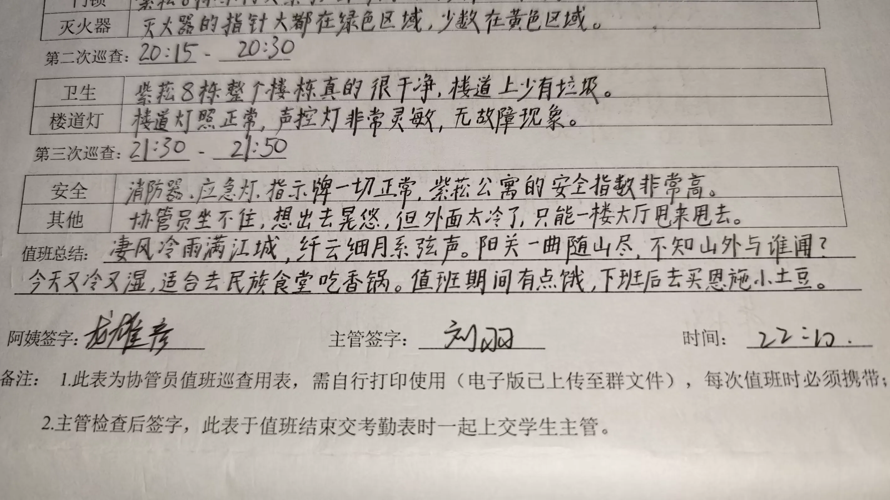
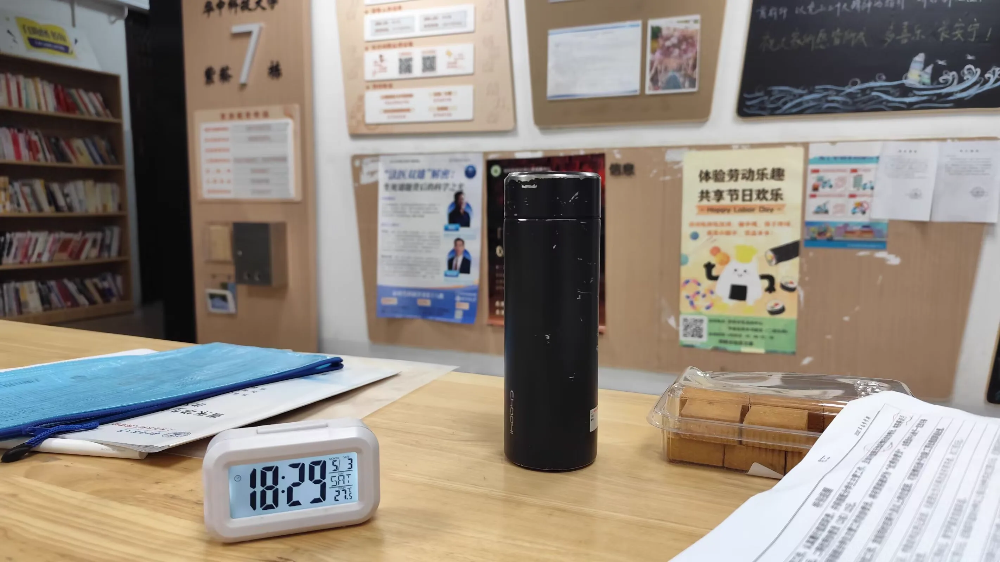
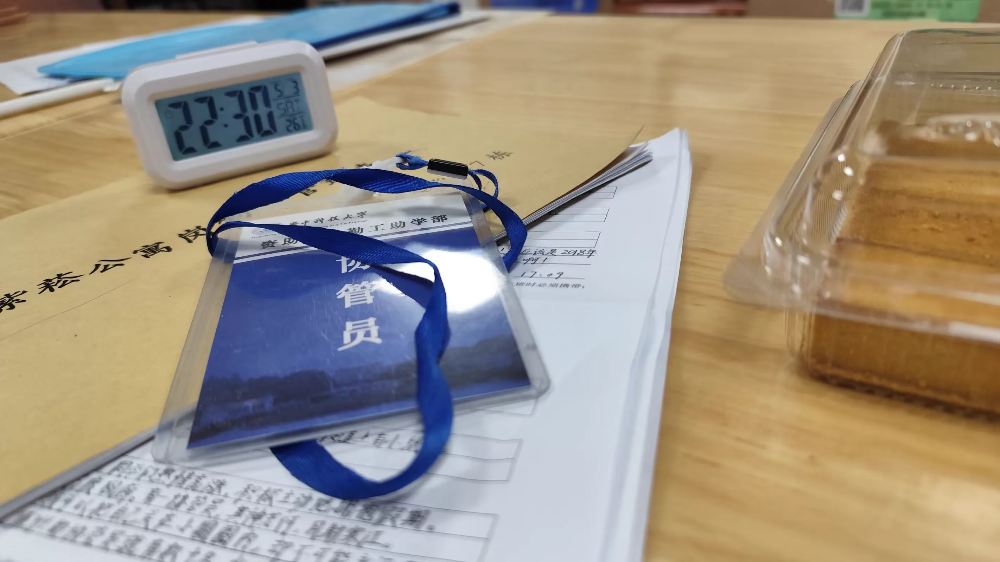
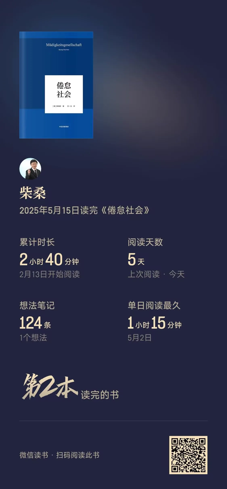
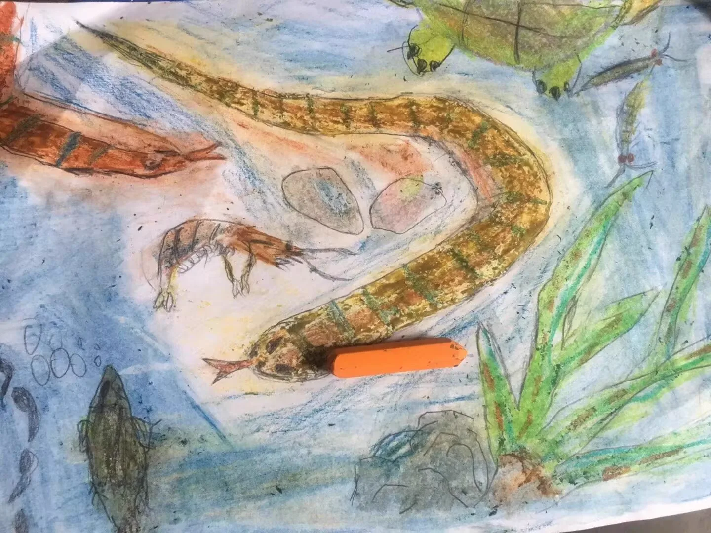

Journal · 2025-05-20
湖北省武汉市
2025年5月20日 17:22
独夜无伴守灯下，春风对面吹。
此刻今宵仍懵懂，遇着少年家。
果然标致面糯白，谁家人子弟？
想要问伊惊歹势，心内弹琵琶。
想要开函见君容，意爱在心内。
等待何时君来访？青春花当开。
听见外面有人来，开门看着觅。
月亮笑侬是呆呆，被风骗不知。
花开当折直须摘，青春最可爱！
只为人生不重来，何不放开怀？





May 20, 2025 17:22
Alone at night with no companion, I keep watch beneath the lamp, as the spring breeze blows against my face.
At this moment, tonight, still innocent and naive, I met a young man.
Indeed handsome, with a fair and gentle face — whose family's son is he?
I wanted to ask him, but was too shy; inside my heart a pipa was strumming.
I long to open the letter and see your face; my affection lies within my heart.
How long must I wait for you to come? Youth's flower is just in bloom.
Hearing someone come outside, I opened the door and looked around to search.
The moon laughs at me for being silly, deceived by the wind without knowing.
When flowers bloom, you should pluck them at once; youth is the loveliest thing!
Only because life won't come again — why not open your heart wide?
20 mai 2025 17:22
Seule la nuit, sans compagnon, je veille sous la lampe, tandis que la brise printanière souffle face à moi.
En cet instant, ce soir, encore candide et ingénue, j'ai rencontré un jeune homme.
Vraiment beau, au visage clair et délicat — de quelle famille est-il donc le fils ?
J'ai voulu lui parler, mais la timidité m'a retenue ; au fond de mon cœur résonnait un luth.
Je voudrais ouvrir la lettre et voir votre visage ; mon amour demeure en mon cœur.
Jusqu'à quand devrai-je attendre votre venue ? La fleur de la jeunesse est justement en éclosion.
Entendant quelqu'un venir dehors, j'ouvris la porte et regardai alentour pour chercher.
La lune se moque de moi, me trouvant sotte, bernée par le vent sans le savoir.
Quand les fleurs s'ouvrent, il faut les cueillir sans tarder ; la jeunesse est ce qu'il y a de plus charmant !
Puisque la vie ne revient pas, pourquoi ne pas ouvrir grand son cœur ?
20.05.2025 17:22
Allein in der Nacht, ohne Gefährten, wache ich unter der Lampe, während mir der Frühlingswind ins Gesicht weht.
In diesem Augenblick, heute Nacht, noch ahnungslos und unschuldig, begegnete ich einem jungen Mann.
Wirklich hübsch, mit zartem, hellem Gesicht — wessen Familie Sohn ist er wohl?
Ich wollte ihn fragen, schämte mich aber zu sehr; in meinem Herzen erklang eine Pipa.
Ich möchte den Brief öffnen und dein Antlitz sehen; meine Liebe liegt in meinem Herzen.
Wie lange muss ich auf deinen Besuch warten? Die Blume der Jugend steht gerade in Blüte.
Als ich draußen jemanden kommen hörte, öffnete ich die Tür und blickte suchend umher.
Der Mond lacht über mich, weil ich einfältig bin, vom Wind getäuscht, ohne es zu wissen.
Wenn Blumen blühen, soll man sie gleich pflücken; die Jugend ist das Lieblichste!
Nur weil das Leben nicht wiederkehrt — warum das Herz nicht weit öffnen?